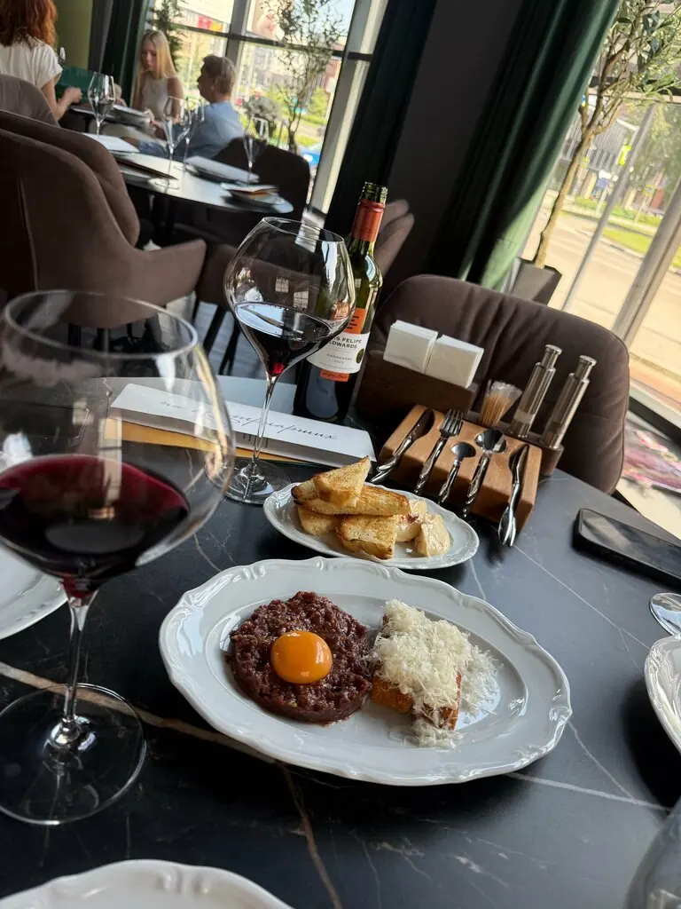
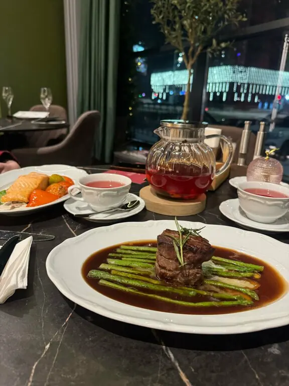
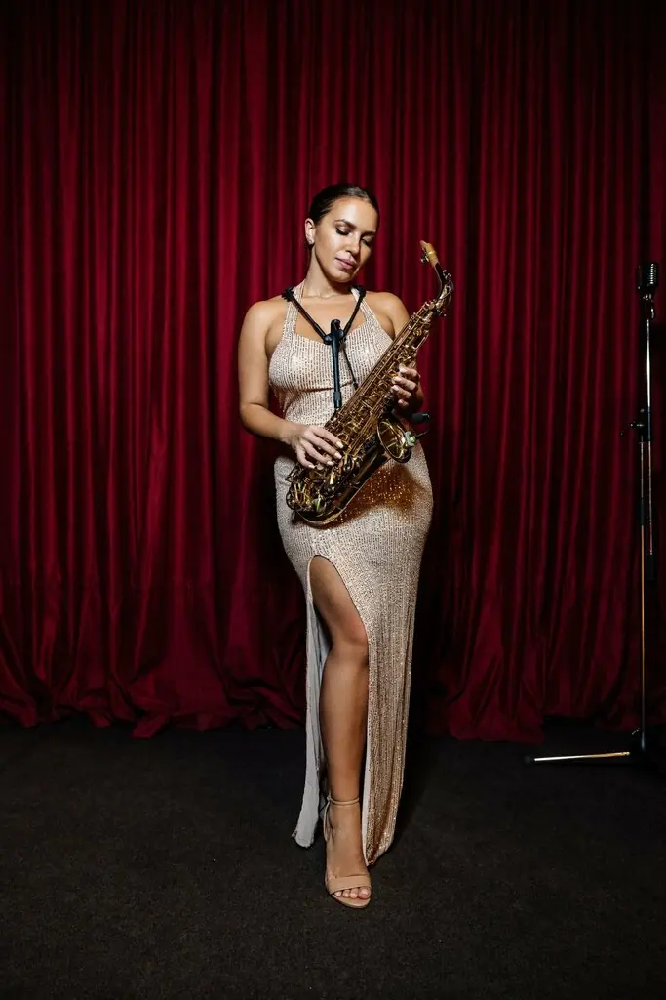
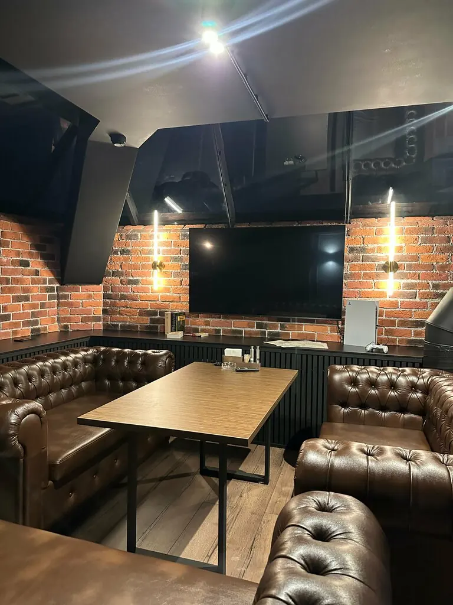

Новокузнецк+7 913 432-00-11
На Патриарших
Разговаривайте с незнакомцами сколько угодно: здесь к этому располагают и красные портьеры, и вечерний зал.
4,4 · 50 оценок
Программка вечера

Действие первое
Ужин
Гости выбирают борщ, мозговые косточки, тартар, рёбрышки и салат из баклажанов. Меню лаконичное, поэтому понятное.

Действие второе
Живая музыка
В программе ресторана есть живая музыка. Вечером зал с подсветкой выглядит особенно красиво.

Действие третье
Второй этаж
Диваны и кальян наверху. Кальянщик, по отзывам, чётко попадает в пожелания по вкусу и крепости.
Блюда из отзывов гостей. Полное меню с ценами добавим из вашего прайса.
Рецензии
Самый красивый ресторан в нашем городе! Роскошный интерьер, красивая подача, вкусные коктейли.Екатерина Лысенко
Самый лучший ресторан города, кухня шикарная. Мой фаворит борщ и мозговые косточки, ну и тартар.Суворов А. Н
Пришли с семьёй пообедать, заведение просто великолепное! Качество продуктов и вкус блюд на высоте.Иван Чуканов
Третий звонок
Новокузнецк, Пионерский проспект, 57Пн–чт 10:00–00:00, пт 10:00–02:00, сб 11:00–02:00, вс 11:00–00:00+7 913 432-00-11